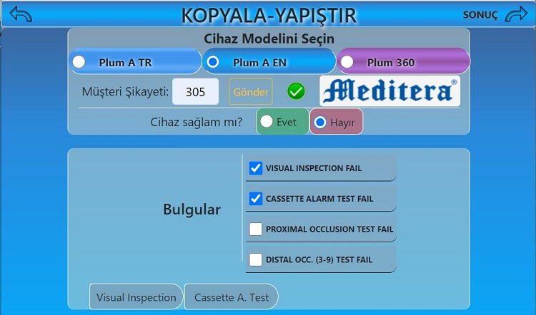
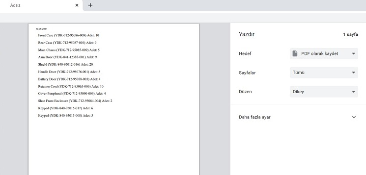

Kopyala Yapıştır'a Hoş Geldiniz
Form girmeyi oldukça kolaylaştıran bu uygulamaya bir göz atın

Yedek Parçaların Resimli Listesi
Arama ve filtrele bölümlerinden istenilen yedek parçayı bulabilirsiniz

İsterseniz yeşil buton ile tek bir parçayı ya da panoya ekle diyerek birden çok parçayı seçerek yedek parça talebi yapabilirsiniz.

Yazdır butonu ile çıktı alabilir ya da PDF olarak kaydedebilirsiniz. Excel butonu ile excel dosyası oluşturabilirsiniz.

Form bilgilerini doldurarak cihazları panoya kaydedip yazdır butonu ile çıktı alabilir, PDF olarak kaydedebilir ya da Excel butonu ile excel dosyası oluşturabilirsiniz.